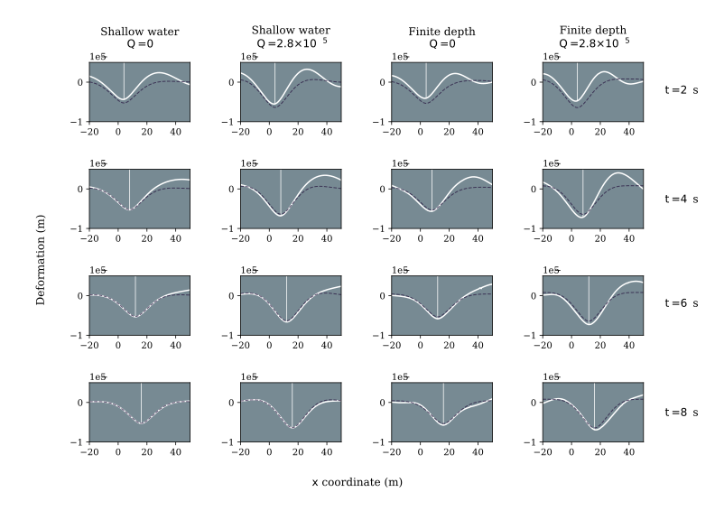

Josiah Murray
Movement of cracked sea ice using the Laplace transform
Supervisors:
Dr Ravi Pethiyagoda, Professor Mike Meylan,
Professor Natalie Thamwattana


\[ \begin{align} D\partial_x^4\eta(x,t) + \rho_I d \partial_t^2\eta(x,t) + Q\partial_x^2\eta(x,t)&&&\nonumber\\ + \rho_w g \eta(x,t) + \rho_w\partial_t\phi(x,0,t) = F(x,t),&&\text{(Ice surface equation)}&\\ \Delta \phi(x,z,t) = 0,&&\text{(Fluid equation)}&\\ \partial_z\phi(x,-h,t) = 0,&&\text{(Sea floor no-flow condition)}&\\ \partial_t\eta(x,t) = \partial_z\phi(x,0,t),&&\text{(Kinematic surface condition)}&\\ D\partial_x^2\partial_z\phi(x_c^\pm,0,t) = 0,&&\text{(Zero bending moment at crack)}&\\ D\partial_x^3\partial_z\phi(x_c^\pm,0,t) + Q\partial_x\partial_z\phi(x_c^\pm,0,t) = 0,&&\text{(Zero shear stress at crack)}& \end{align} \]
- Apply Laplace transform
- Find general solution
- Homogeneous solution
- Particular solution (moving point force)
- Apply boundary conditions between regions
- Invert Laplace transform numerically
\[D\partial_x^4\partial_z\bar\phi(x,0,s) + s^2\rho_I d \partial_z\bar\phi(x,0,s) + Q\partial_x^2\partial_z\bar\phi(x,0,s) + \rho_w g \partial_z\bar\phi(x,0,s) + s^2\rho_w\bar\phi(x, 0 ,s) = s\bar F(x,s)\]
\[\Delta \bar \phi(x,z,s) = 0 \] \[\Downarrow \] \[ \bar\phi_h(x,z,s) = \sum_{n=1}^\infty a_ne^{\text{i}k_n(s)x}\frac{\cosh(k_n(s)z+k_n(s)h)}{\cosh(k_n(s)h)} \] \[ \left[Dk^4 - Qk^2 + (\rho_I d s^2 + \rho_w g)\right]k\tanh(kh) + \rho_w s^2 = 0.\]
\[\partial_z \bar\phi(x,-h,s) = 0\]

Roots of dispersion relation:
\[ \left[Dk^4 - Qk^2 + (\rho_I d s^2 + \rho_w g)\right]k\tanh(kh) + \rho_w s^2 = 0.\]- Position depends on Laplace variable.
- Six blue roots correspond to roots in 'shallow water' limit.
- Four off-axis roots correspond to roots of Euler-Bernoulli beam.
\[ \bar\phi(x,z,s) = \sum_{n=1}^\infty a_ne^{\text{i}k_n(s)x}\frac{\cosh(k_n(s)z+k_n(s)h)}{\cosh(k_n(s)h)} + \bbox[10px, border: 4px solid #cfcfff]{\phi_p(x,z,s)} \] \[ \left[Dk^4 - Qk^2 + (\rho_I d s^2 + \rho_w g)\right]k\tanh(kh) + \rho_w s^2 = 0.\]
Stationary
\[F(x,t) = \delta(x-x_p)\] \[\bar F(x,s) = \delta(x-x_p)/s\] \[\left[ \partial_x^3\partial_z\bar\phi(x,0,s)\right]_{x=x_p^-}^{x_p^+} = \frac{1}{D}\] ( boundary condition, no $\phi_p$ )Moving
\[F(x,t) = \delta(x-x_p-vt)\] \[\bar F(x,s) = \frac{s}{|v|}e^{-s(x-x_p)/v}H\left( \frac{x-x_p}{v}\right)\] \[\phi_p = \] \[\frac{-se^{-s(x-x_p)/v}\cos(s(z+h)/v)/\cos(sh/v)}{|v|( [D(s/v)^5 + Q(s/v)^3 + (s^2\rho_I d + \rho_wg)(s/v)]\tan(sh/v) - s^2\rho_w)}.\]Using Fourier transform:
\[\begin{multline} D\partial_x^4\partial_z\bar\phi(x,0,s) + s^2\rho_I d \partial_z\bar\phi(x,0,s) + Q\partial_x^2\partial_z\bar\phi(x,0,s)\\ + \rho_w g \partial_z\bar\phi(x,0,s) + s^2\rho_w\bar\phi(x, 0 ,s) = \frac{s}{|v|}e^{-s(x-x_p)/v}H\left( \frac{x-x_p}{v}\right), \end{multline}\] Apply the Fourier transform: \[\bar\phi_p(x,z,s) = \frac{1}{2\pi}\int_{-\infty}^\infty \frac{se^{\text{i}k(x-x_p)}\cosh(k(z+h))/\cosh(kh)}{(s+\text{i}vk)\left( [Dk^4 -Qk^2 + (s^2\rho_I d + g\rho_w)]k\tanh(kh) + s^2\rho_w \right) }dk.\]\[ \bar\phi(x,z,s) = \sum_{n=1}^\infty \bbox[5px, border: 4px solid #cfcfff]{a_n}e^{\text{i}k_n(s)x}\frac{\cosh(k_n(s)z+k_n(s)h)}{\cosh(k_n(s)h)} + \phi_p(x,z,s) \] \[ \left[Dk^4 - Qk^2 + (\rho_I d s^2 + \rho_w g)\right]k\tanh(kh) + \rho_w s^2 = 0.\]
Stat. point force
\[\partial_z\bar\phi_{R}(x_p,0,s) - \partial_z\bar\phi_{L}(x_p,0,s) = 0\] \[\partial_x\partial_z\bar\phi_{R}(x_p,0,s) - \partial_x\partial_z\bar\phi_{L}(x_p,0,s) = 0\] \[\partial_x^2\partial_z\bar\phi_{R}(x_p,0,s) - \partial_x^2\partial_z\bar\phi_{L}(x_p,0,s) = 0\] \[\partial_x^3\partial_z\bar\phi_{R}(x_p,0,s) - \partial_x^3\partial_z\bar\phi_{L}(x_p,0,s) = 1/D\]Crack
\[\partial_x^2\partial_z\bar\phi_{L}(x_c,0,s) = 0\] \[\partial_x^2\partial_z\bar\phi_{R}(x_c,0,s) = 0\] \[D\partial_x^3\partial_z\bar\phi_{L}(x_c,0,s) + Q \partial_x\partial_z\bar\phi_{L}(x_c,0,s) = 0\] \[D\partial_x^3\partial_z\bar\phi_{R}(x_c,0,s) + Q \partial_x\partial_z\bar\phi_{R}(x_c,0,s) = 0\]Eigenfunction matching:
\[L(f(z);j) = \int_{-h}^0 f(z)\cos(j\pi z/h)dz,\] \[\begin{align}L(\bar\phi_R;j)(x,s) - L(\bar\phi_L;j)(x,s) = 0,\quad j=0,\dots,(n-4)/2-1,\\ L(\partial_x\bar\phi_R;j)(x,s) - L(\partial_x\bar\phi_L;j)(x,s) = 0,\quad j=0,\dots,(n-4)/2-1. \end{align}\]Numerical inversion:
Gaver-Wynn rho algorithm


This research was supported by the Australian Government through the ARC's Discovery Projects funding scheme (project DP22010286). The views expressed herein are those of the authors and are not necessarily those of the Australian Government or the ARC.